Professional Projects
Ryobi P761
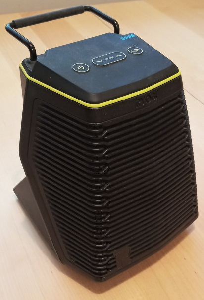
Ryobi P761: Wireless audio receiver that runs off a drill battery.
Home Depot website.
Teardown.
Aquarius
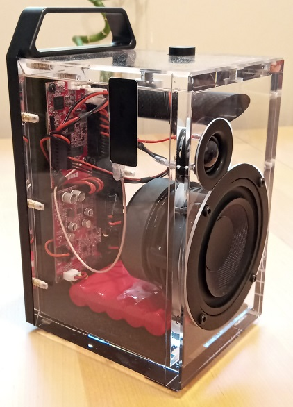
Dillinger Labs Aquarius: Wireless audio receiver that uses Ecosystem modules.
Website.
More information about Strawberry.
Electronics
Eventually all my project logs will be moved here, but for now they can be viewed at hackaday.io/adamgulyas.
VCO
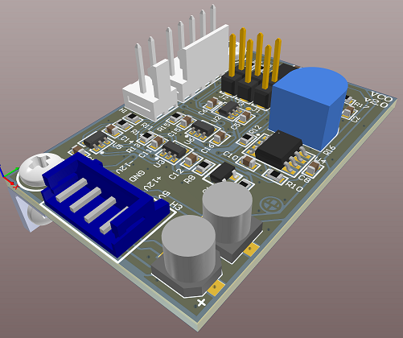
A modular synthesizer voltage controlled oscillator based on a schematic I found in an old magazine
article titled "Inexpensive voltage-controlled oscillator is rich in harmonics over entire audio range".
I built a breadboard version during a Hackathon in 2016, then decided to finish it. The magazine
article circuit had two flaws in it. The 555 timer was hooked up wrong to be a schmitt trigger and
the BJT invertor had a resistor in an incorrect position. I replaced the 555 timer + bjt with an
op-amp to simplify things. When debugging the original circuit, I found it really helpful to seperate
each circuit block and feed dummy signals into them, then observe the output. I kept that ability in
the PCB as well with the three jumpers. I wrote a whitepaper with the algebraic analysis of the
integrator because it's non-intuitive why switching in that resistor would reverse the output.
Project Log.
Original Schematic.
My Schematic.
Spice Simulation
Integrator Whitepaper.
News Article.
8Note
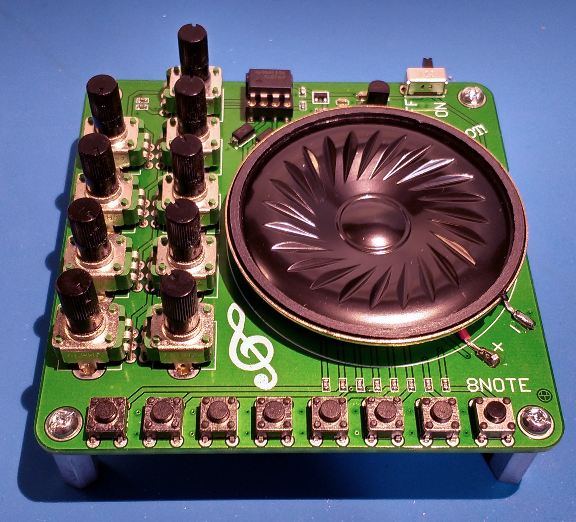An eight note piano to test small scale production. Project Log.
Audio IO Switch

Two TRS jacks on either side of the box. The switch on each side can choose which jack is fed through to the other side. Completely passive, so there's not a defined input or output side. The main challenge was getting everything lined up mechanically. Project Log. Github repo.
Relay Puzzle Box
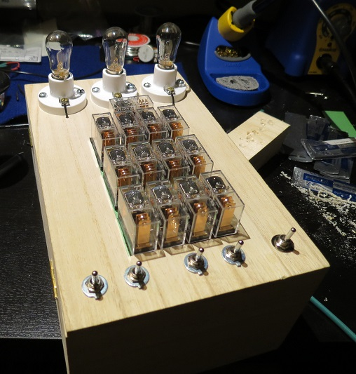An entry for the Engineering Art Show I did while still in university. I presented it as a puzzle box. The light bulbs turn on
in a seemingly "random" order in response to the switches. It's really just a two bit full adder. I made it before I had any experience with PCB design, so
the inside is a mess of wire. I'm quite proud that, in all that chaos, I was methodical enough that it worked perfectly the first time I turned it on. I had
hoped to get a satisfying series of relay clicks when changing state, but they all happen near instantaneously. In the future I might make a PCB for a 1 bit
module that can be connected in series to add arbitrary length numbers.
I didn't look up how to make relay logic gates, instead deriving them by hand. You can see all the different variations I came up with in the log.
Project Log.
Demo Video.
Embedded C Class: Lab 10
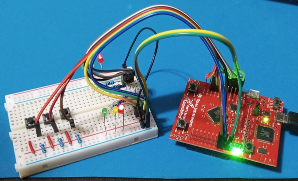The final lab of a course that taught how to program GPIO. Traffic lights are controlled with a finite state machine programmed in C. Github repo. Demo Video.
Altium Library
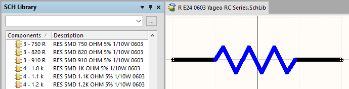An Altium schematic library for E24 5% 0603 Yageo RC Series resistors. I find it annoying to make standard resistors as I need them. I'd rather spend a few hours and export data from Digi-Key then mass import it into an Altium library. Since searching for values "alphabetically" is kind of annoying (where 47Ω comes after 10kΩ), I put the decade number at the start of the symbol reference so Altium would automatically order them by increasing value. Github repo.
RF
Patch Antenna

Designing and testing a 2.44 GHz patch antenna. Project Log.
Carpentry
At one point I spent about a year as a carpenter's apprentice at HERR Window & Door. In that time I built custom doors and windows, including the hinged egress windows shown on their site. It taught me to be methodical and precise, and to always be thinking about how what I was currently doing would affect the next steps in the process. Although I didn't take any pictures of the doors I made, below are some of the things I built in my own time.
Lyre
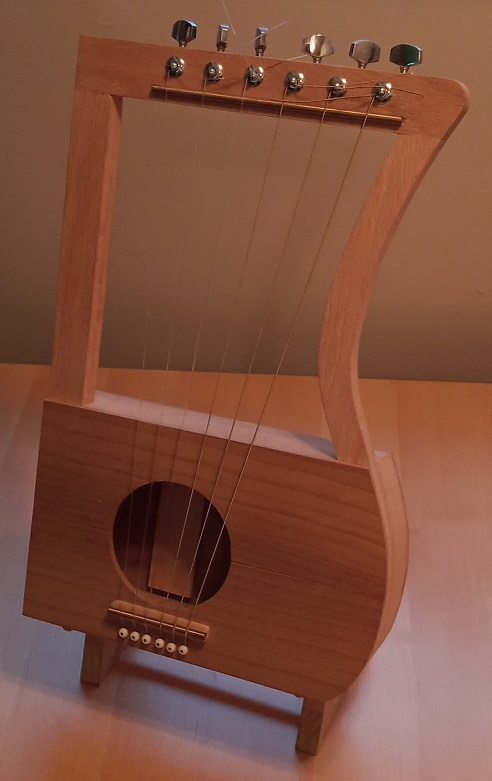Lyre made with wood from Home Depot and reused guitar parts. An entry for one of the UofA Engineering Art Shows.
Wands
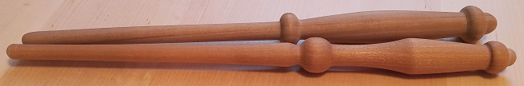Wands turned on a wood lathe. An entry for one of the UofA Engineering Art Shows.
Turned Bowls
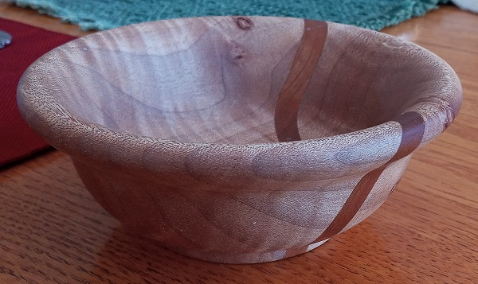Maple with cherry insert. Finished with Danish Oil. This was a Christmas gift for my Grandparents.
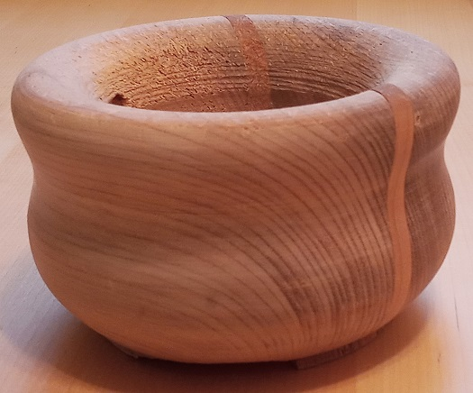Maple with cherry insert. This was a failed project. I made a mistake with the lathe chisel and had a pretty bad gouge. Part of the tenon broke and it flew off the chuck. I couldn't remount it. It was supposed to be a gift, but now I just keep my keys in it.
Graphic Design
Tal'Dorei Hex Map
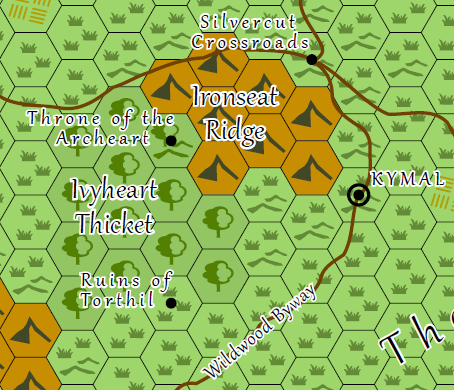A hex map based off of Tal'Dorei. Nov 2020. Source Files.
PCB Wallpaper
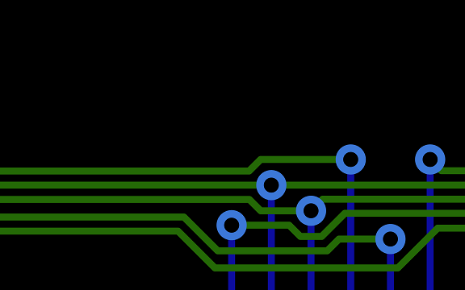A desktop background inspired by PCB routing. Download.